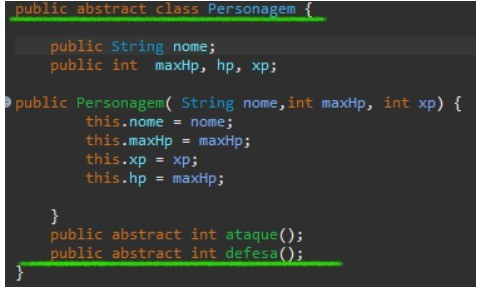

Introdução
Em um grandioso mundo, todas as raças existentes buscam a sobreviver conforme a lei natural onde o mais forte sempre sobrevive. Os humanos, por sua vez, buscam através da inteligência, estratégias de sobrevivências, desenvolvendo uma das gigantes cidades de Jan Gu. A Cidade das espadas, um dos principais assentamentos humanos, revela muitos jovens Magos e Guerreiros que seguem em sua jornada para a grande Cidade do Dragão. Para muitos, é onde os sonhos começam. Dessa forma, o mundo foi se dividindo entre classes de diferentes espécies, e se adaptando aos seus devidos territórios, conforme foram sobrevivendo e se desenvolvendo. Não muito distante da cidade das espadas, um grupo de selvagens, cresceram sendo moldados pelo seu jeito agressivo de ser, e com o passar das décadas, também foram criadas metrópoles com sua principal denominada de Cidade das Trevas. Com o desejo apenas de destruição, visto que seu território seja arenoso, as terras de Jan Gu enfrentam uma ameaça iminente que coloca em risco a fauna e a flora do mundo. O líder supremo dos selvagens, conhecido como Drakul, planeja espalhar destruição por todas as cidades. Seu desejo maligno é ver o mundo mergulhado em desolação, sem vida e beleza. O foco de Drakul, o Destruidor Verde, são as maiores metrópoles como a Cidade das Espadas, Cidade do Dragão e a Cidade das plumas. Dessa forma, um mero guerreiro nascido no subúrbio da cidade das Espadas, sonha em se tornar um grandioso guerreiro para que possa defender seus familiares e sua rica cidade, que preserva seus recursos naturais como grande orgulho e patrimônio.
Referencial Teorico
O método construtor da classe Inimigo está definido da seguinte maneira:
o método construtor utiliza super() para chamar o construtor da superclasse Personagem. Isso é feito para inicializar os atributos herdados da classe Personagem. Os argumentos passados para super() são nome, (int) (Math.random()* jogadorXp + jogadorXp/3 + 5), (int) (Math.random()*(jogadorXp/4 + 2)+1). Esses valores são calculados para fornecer valores aleatórios para a vida ((int) (Math.random()* jogadorXp + jogadorXp/3 + 5)) e experiência ((int) (Math.random()*(jogadorXp/4 + 2)+1))
Herança
Herança: A herança é implementada usando a palavra-chave extends na declaração da classe Inimigo, que herda da classe Personagem. Aqui está o trecho relevante:
No código fornecido, a herança é implementada na classe Inimigo por meio da declaração extends Personagem. Isso significa que a classe Inimigo herda os atributos e métodos da classe Personagem, estabelecendo uma relação de "é um" entre as duas classes. Ao herdar da classe Personagem, a classe Inimigo adquire todos os atributos e métodos da classe pai. Isso significa que a classe Inimigo pode acessar e utilizar os atributos e métodos públicos ou protegidos da classe Personagem diretamente, sem a necessidade de redefini-los.
Polimorfismo

O polimorfismo permite que um objeto seja tratado como uma instância de sua classe específica ou como uma instância de uma de suas superclasses. No código fornecido, o polimorfismo está implícito na chamada de métodos ataque() e defesa() da classe Inimigo.
Jogador
Métodos Construtores:

1ºEle recebe o nome do jogador como entrada e o utiliza para dar um nome ao jogador.
2ºEm seguida, ele chama o construtor da classe Personagem (a classe pai) para definir os valores iniciais da vida e experiência do jogador. Isso garante que o jogador comece com uma certa quantidade de vida e experiência.
3ºDepois disso, o construtor inicializa outros atributos específicos do jogador, como o número de aumentos de ataque e defesa, a quantidade de moedas, os descansos disponíveis e o número de poções.
4ºPor fim, o construtor chama o método escolhaCaract(), que permite ao jogador escolher uma característica específica, como um aumento de ataque ou defesa.Lógica Jogo
Métodos Construtores:
A classe Logicajogo possui um método estático chamado startGame() que inicia o jogo. Dentro desse método, é criada uma instância da classe Jogador usando o construtor Jogador(nome). A variável jogador é declarada como static para ser acessada em outros métodos da classe.
O método gameLoop() é responsável por executar repetidamente o menu do jogo e chamar outros métodos de acordo com a escolha do jogador.
Herança
Nesse caso, a classe Jogador e Inimigo estendem a classe base Personagem, herdando suas propriedades e métodos. Essa é uma forma de aplicar herança na programação. Polimorfismo: O polimorfismo pode ser observado nos métodos ataque() e defesa(). Esses métodos são substituições dos métodos da classe Personagem, eles têm a mesma assinatura, mas o comportamento é modificado na classe Jogador. Isso deixa que diferentes tipos de personagens tenham comportamentos de ataque e defesa.
Personagem
Métodos Construtores
O método construtor está presente na classe Personagem. Ele é responsável por inicializar os atributos da classe quando um objeto é criado. No caso do código enviado, o método construtor recebe os parâmetros nome, maxHp e xp e os utiliza para inicializar os atributos correspondentes.
Elementos abstratos:
O código contém um elemento abstrato, que é a declaração do método ataque() e defesa() na classe abstrata Personagem. Métodos abstratos são declarados sem implementação e devem ser implementados pelas classes que herdam de Personagem.
Christian Serello | Projeto de Christian Serello!